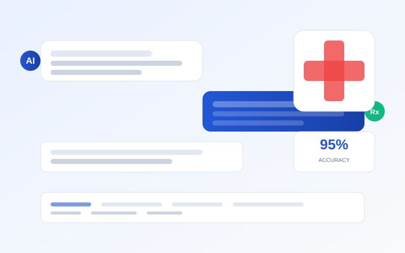
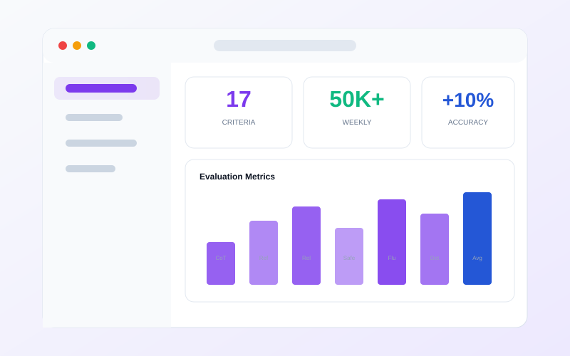
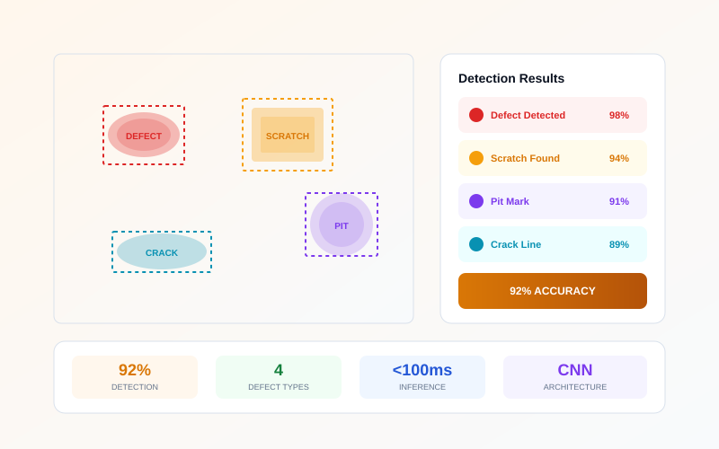

My Projects
AI systems designed and deployed for real-world problems



DATA SCIENCE PROJECTS
Credit Card Churn Prediction
ML model to identify customers likely to leave banking services.
Key Features:
- Churn risk classification
- Feature engineering
- High-accuracy ML models
Business Impact:
Improved churn recall from 24% to 87%, significantly reducing customer attrition.
Technologies:
Cash Demand Forecasting
AI-driven system to forecast cash requirements across bank branches.
Key Features:
- Multi-variate time-series modeling
- Seasonal & holiday impact analysis
- Automated replenishment scheduling
Business Impact:
Reduced idle cash by 25% across 500+ branches, optimizing liquidity while maintaining service levels.
Technologies:
Cash Optimization System
ATM cash forecasting system to reduce shortages and operational costs.
Key Features:
- Demand forecasting per ATM using historical
- Dynamic cash replenishment scheduling
- Cost optimization analysis
Business Impact:
Saved PKR 124M through AI-driven cash management and shortage reduction. Reduced ATM cash-out incidents.
Technologies:
COMPUTER VISION PROJECTS
Metal vs Plastic Classifier
Deep learning computer vision system for automated waste material segregation and classification.
Key Features:
- CNN transfer learning classification
- 98%+ segregation accuracy
- Real-time edge & web inference
Business Impact:
Automated recycling inspection pipeline, reducing manual sorting overhead with high precision.
Technologies:
Visual Content Recommendation Engine
AI system that recommends content based on visual similarity and aesthetic features.
Key Features:
- Feature extraction using deep CNNs
- Visual similarity-based ranking
- Scalable search in vector space
Business Impact:
Generated 30% higher engagement by delivering visually relevant content in real-time.
Technologies:
Human Posture Detection & Tracking
Real-time human posture classification (Standing, Sitting, Sleeping) and motion tracking.
Key Features:
- Real-time pose estimation
- Multi-state posture classification
- Optimized inference for live video streams
Business Impact:
Enabled automated ergonomic and posture monitoring with real-time video feedback.
Technologies:
AGENTIC AI / GENERATIVE AI PROJECTS
LLM Judge & Agentic RAG System
Scalable LLM system for evaluating customer support conversations.
Key Features:
- LLM Judge across 17 quality criteria
- Agentic RAG for deep analysis
- 50K+ conversations weekly
Business Impact:
Improved evaluation accuracy by +10% and reduced inference latency to ~100ms.
Technologies:
Medical Chat Bot (RAG)
Healthcare chatbot using hybrid search for accurate answers.
Key Features:
- RAG-based medical QA
- Hybrid vector search
- Safe answer generation
Business Impact:
Achieved 95% relevant answer rate, significantly streamlining preliminary medical inquiry handling.
Technologies:
Query Router & SLM Fine-Tuning
High-performance intent classification and hybrid retrieval system.
Key Features:
- Finetuned Qwen-2.5-0.6B
- Optimized inference
- Finetuned Sentence Transformer
Business Impact:
Enabled routing for 50K+ daily queries, outperformed GPT-4.1 by 16.45%, and reduced latency to ~100ms.
Technologies: